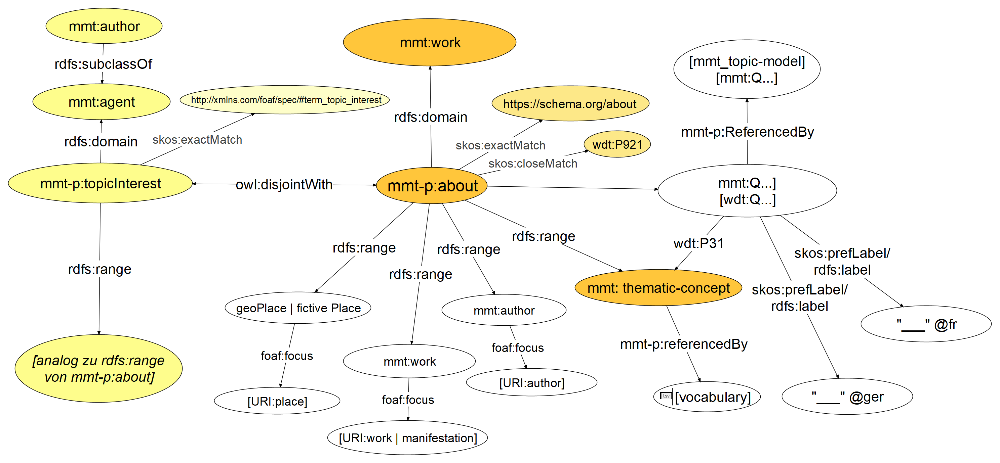
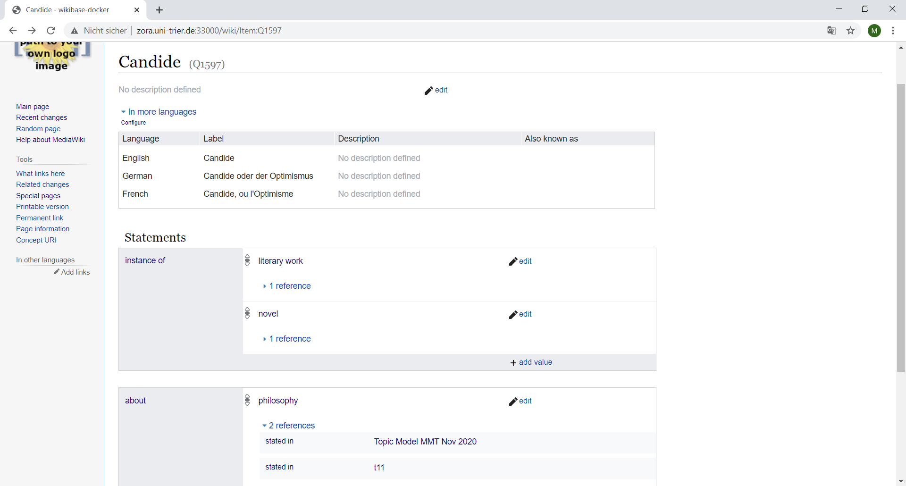

#### Towards an ontology for literary history: issues of complexity and scale when constructing the MiMoTextBase <img height="60" data-src="img/basics/mimotext-logo.png"> <br/> <hr/> <p>Christof Schöch and Maria Hinzmann<br/> with Julia Röttgermann, Tinghui Duan, Anne Klee, Moritz Bremm</p> <br/> <p><a href="https://mimotext.uni-trier.de/en">https://mimotext.uni-trier.de/en</a></p> <p><strong><emph>Ontologies for Narrative and Fiction, Groningen</emph> | July 3-4, 2023</strong></p> <hr/> <img height="50" data-src="img/basics/tcdh-slim.png"> <img height="50" data-src="img/basics/uni-trier.png"> <img height="50" data-src="img/basics/mwrlp.svg"> :: - Hello and welcome to our talk - We're very happy to be here - Our topic is how we used ontologies in the process of building a resource based on linked open data for French literary history - We would like to share our experiences regarding this issue in the project "Mining and Modeling Text" -- ## Structure 1. [Mining and Modeling Text:<br/>Linked Open Literary History](#/2) 2. [Design, implementation,<br/>and use of ontologies](#/3) 5. [Conclusion](#/4) :: - Our plan ist to first provide some background on the project - Then, we will focus on the role of the design and use of ontologies in the project - I will present the first part, Maria Hinzmann will present the second part -- ## (1) Mining and Modeling Text:<br/>Linked Open Literary History --- #### MiMoText in a nutshell <a href="img/overview_eng.jpg"><img height="450" data-src="img/overview_eng.jpg"></a> <br/><a href="https://mimotext.uni-trier.de/en">https://mimotext.uni-trier.de/en</a> :: - Maria Hinzmann and me are the main coordinators of "Mining and Modeling Text", run at the Trier Center for Digital Humanities - The funding for this 4-year-project, set to run out at the end of the year, comes from the state of Rhineland-Palatinate, where Trier is located. - The object of study in our project is the French novel of the second half of the eighteenth century - In order to collect information about this domain, we use three sources of information - Bibliographic metadata, in our case mainly the "Bibliographie du genre romanesque francais, 1751-1800", by Martin, Mylne and Frautschi - Knowledge compiled by in literary historiography, notably a number of book chapters summarizing the history of the French novel at the time - And, characteristics of the relevant novels themselves, through a corpus of 200 such novels. - The general aim: - Automatically extract relevant information from these sources - Model this information as LOD and linking them as much as possible - Analyse this information in order to learn more about the period's literature, but also on literary historiography. - This also means: turning heterogeneous sources into a homogeneous dataset - This also implies explicitly modeling everything, and of course that is where controlled vocabularies, taxonomies, ontologies and their implementation and usage come into play. --- #### Aims of the project - Our goal: "Wikidata for literary history" <!-- .element: class="fragment" data-fragment-index="1" --> - An information system for literary history - Central role of taxonomies, ontologies, authority files - LOD-based, with exploratory interface and SPARQL-endpoint - Unlike Wikidata: <!-- .element: class="fragment" data-fragment-index="2" --> - Much more focused on one domain (French novel 1750-1800) - Better coverage for this domain - Higher density of assertions for this domain - Based on explicit data modeling - Facilitates advanced analysis scenarios --- #### Result: the MiMoTextBase <a href="http://data.mimotext.uni-trier.de/wiki/Main_Page"><img height="450" src="img/mimotextbase.png"></img></a> - http://data.mimotext.uni-trier.de :: - Start with some examples from the Wikibase "wiki view" - Author: not a lot of information, but: "exact_match" (!) => Wikidata - Title: a lot more information, both modeled and as strings, from various sources; meta-assertions / references - One can do searches here as well, but not in a very targeted manner => SPARQL --- #### The SPARQL endpoint <a href="img/sparql_results1.png"><img height="350" src="img/sparql_results1.png"></img></a> - SPARQL = SPARQL Protocol and RDF Query Language - Used to formulate complex queries on LOD - https://query.mimotext.uni-trier.de :: - Currently, we have over 330.000 triples, so this already opens up many possiblities --- #### Some example queries - Simple queries - [List of novels with information from BGRF](https://query.mimotext.uni-trier.de/#%23%20Query%20to%20retrieve%20some%20data%20about%20the%20MiMoTextBase%20such%20as%20Authors%2C%20Novels%2C%20publicationyears%2C%20tonality%20etc.%0Aprefix%20wd%3A%3Chttp%3A%2F%2Fdata.mimotext.uni-trier.de%2Fentity%2F%3E%0Aprefix%20wdt%3A%3Chttp%3A%2F%2Fdata.mimotext.uni-trier.de%2Fprop%2Fdirect%2F%3E%20%0ASELECT%20DISTINCT%20%3Fbgrf%20%3Fitem%20%3Fauthorlabel%20%3FitemLabel%20%3Fyear%20%3Fnarrpers%20%3Ftonality%20%3Fpages%20%3Fnormalized%20WHERE%20%7B%0A%20%3Fitem%20wdt%3AP5%20%3Fauthor%3B%20%23%20who%20is%20the%20author%3F%0A%20%20%20%20%20%20%20wdt%3AP4%20%3Ftitle%3B%20%23%20what%20is%20the%20title%3F%0A%20%20%20%20%20%20%20wdt%3AP22%20%3Fbgrf%3B%20%20%23%20what%20is%20the%20identifier%20in%20the%20bibliographic%20metadata%3F%0A%20%20%20%20%20%20%20wdt%3AP9%20%3Fdate%3B%20%23%20what%20is%20the%20publication%20date%3F%0A%20OPTIONAL%20%7B%0A%20%20%20%3Fitem%20wdt%3AP27%20%3Fnarrpers%3B%20wdt%3AP31%20%3Ftonality%3B%20wdt%3AP25%20%3Fpages.%20%0A%20%7D%0A%20BIND%28YEAR%28%3Fdate%29%20as%20%3Fyear%29.%0A%20BIND%28if%28bound%28%3Fnarrpers%29%2C%20%3Fnarrpers%2C%20%22unbekannt%22%29%20as%20%3Fnormalized%29%0A%20%3Fauthor%20rdfs%3Alabel%20%3Fauthorlabel.%0A%20FILTER%28LANG%28%3Fauthorlabel%29%20%3D%20%22en%22%29%0A%20SERVICE%20wikibase%3Alabel%20%7B%20bd%3AserviceParam%20wikibase%3Alanguage%20%22%5BAUTO_LANGUAGE%5D%2C%20fr%22.%20%7D%0A%7D%20ORDER%20BY%20%3Fyear) - [The number of works written by each author](https://query.mimotext.uni-trier.de/#%23%20Get%20the%20count%20of%20written%20novels%20per%20authors%0APREFIX%20wd%3A%3Chttp%3A%2F%2Fdata.mimotext.uni-trier.de%2Fentity%2F%3E%0APREFIX%20wdt%3A%3Chttp%3A%2F%2Fdata.mimotext.uni-trier.de%2Fprop%2Fdirect%2F%3E%0A%0ASELECT%20%3FauthorName%20%28count%20%28%3FauthorName%29%20as%20%3Fcount%29%0AWHERE%20%7B%0A%20%20%20%3Fwork%20wdt%3AP5%20%3Fauthor%20.%20%23%20work%20has%20author.%0A%20%20%20%3Fauthor%20rdfs%3Alabel%20%3FauthorName%20.%20%23%20get%20author%20label%20%28not%20only%20Link%20to%20author%29%0A%20%20%20FILTER%28LANG%28%3FauthorName%29%20%3D%20%22en%22%29%20%23%20other%20options%3A%20%22fr%22%2C%20%22de%22.%20Filter%20is%20needed%20as%20there%20is%20more%20than%20one%20label%20%28language%20dependent%29%0A%7D%0A%0Agroup%20by%20%3FauthorName%0Aorder%20by%20desc%20%28%3Fcount%29%0A%0A) - [The themes of the novels, in French](https://query.mimotext.uni-trier.de/index.html#%23defaultView%3ABubbleChart%0Aprefix%20wd%3A%3Chttp%3A%2F%2Fdata.mimotext.uni-trier.de%2Fentity%2F%3E%0Aprefix%20wdt%3A%3Chttp%3A%2F%2Fdata.mimotext.uni-trier.de%2Fprop%2Fdirect%2F%3E%20%0ASELECT%20%3FtopLabel%20%28count%28%2a%29%20as%20%3Fcount%29%0AWHERE%20%7B%0A%20%3Fitem%20wdt%3AP36%20%3Ftop%20.%0A%20%3Ftop%20rdfs%3Alabel%20%3FtopLabel%20.%0A%20filter%28lang%28%3FtopLabel%29%20%3D%20%22fr%22%29%0A%7D%0AGROUP%20BY%20%3FtopLabel%0AORDER%20BY%20desc%28%3Fcount%29) and in [English](https://query.mimotext.uni-trier.de/index.html#%23defaultView%3ABubbleChart%0Aprefix%20wd%3A%3Chttp%3A%2F%2Fdata.mimotext.uni-trier.de%2Fentity%2F%3E%0Aprefix%20wdt%3A%3Chttp%3A%2F%2Fdata.mimotext.uni-trier.de%2Fprop%2Fdirect%2F%3E%20%0ASELECT%20%3FtopLabel%20%28count%28%2a%29%20as%20%3Fcount%29%0AWHERE%20%7B%0A%20%3Fitem%20wdt%3AP36%20%3Ftop%20.%0A%20%3Ftop%20rdfs%3Alabel%20%3FtopLabel%20.%0A%20filter%28lang%28%3FtopLabel%29%20%3D%20%22en%22%29%0A%7D%0AGROUP%20BY%20%3FtopLabel%0AORDER%20BY%20desc%28%3Fcount%29) <br/><br/> - Queries with visualization - [Number of novels published per year](https://query.mimotext.uni-trier.de/#%23%20Query%20to%20retrieve%20the%20first%20publication%20dates%20of%20all%20French%20novels%201751-1800%0Aprefix%20wd%3A%3Chttp%3A%2F%2Fdata.mimotext.uni-trier.de%2Fentity%2F%3E%20%0Aprefix%20wdt%3A%3Chttp%3A%2F%2Fdata.mimotext.uni-trier.de%2Fprop%2Fdirect%2F%3E%20%0ASELECT%20%28str%28SAMPLE%28year%28%3Fdate%29%29%29%20as%20%3Fyear%29%20%28COUNT%28%2a%29%20AS%20%3Fcount%29%0AWHERE%20%7B%0A%20%20%20%3Fitem%20wdt%3AP9%20%3Fdate%20.%0A%7D%0AGROUP%20BY%20%3Fdate%0AORDER%20BY%20DESC%28%3Fdate%29) - [The authors (by date of birth, with portrait)](https://query.mimotext.uni-trier.de/#%23%20show%20authors%2C%20their%20Wikidata%20match%2C%20their%20birth%20dates%20in%20a%20timeline%20%0A%23defaultView%3ATimeline%0APREFIX%20wid%3A%20%3Chttp%3A%2F%2Fwww.wikidata.org%2Fentity%2F%3E%20%23wikidata%20prefix%20definition%20for%20entity%0APREFIX%20widt%3A%20%3Chttp%3A%2F%2Fwww.wikidata.org%2Fprop%2Fdirect%2F%3E%20%23wikidata%20prefix%20definition%20for%20property%0Aprefix%20wd%3A%3Chttp%3A%2F%2Fdata.mimotext.uni-trier.de%2Fentity%2F%3E%20%23mimotext%20prefix%20for%20entity%20is%20wd%0Aprefix%20wdt%3A%3Chttp%3A%2F%2Fdata.mimotext.uni-trier.de%2Fprop%2Fdirect%2F%3E%20%23mimotext%20prefix%20for%20property%20is%20wdt%0ASelect%20%3Fauthor%20%3FauthorLabel%20%3FwikiLink%20%3Fbirth%20%3Fimage%20%0A%7B%0A%20%20%3Fauthor%20wdt%3AP11%20%3Foccupation.%0A%20%20%3Fauthor%20wdt%3AP13%20%3FwikiLink.%0A%20%20%3Fauthor%20rdfs%3Alabel%20%3FauthorLabel%0A%20%20Filter%28lang%28%3FauthorLabel%29%20%3D%20%22en%22%29%0A%20%20%20%20%20%20%20%20%20%20%0A%20%20SERVICE%20%3Chttps%3A%2F%2Fquery.wikidata.org%2Fsparql%3E%20%7B%0A%20%20%20%20%3FwikiLink%20widt%3AP569%20%3Fbirth.%20%0A%20OPTIONAL%7B%20%20%20%3FwikiLink%20widt%3AP18%20%3Fimage.%7D%0A%0A%20%20%7D%0A%20%20%20%20%20%20%20%20%20%20%20%0A%7D%0A) - [The narrative form of the novels (and their prevalence)](https://query.mimotext.uni-trier.de/#%23%20Query%20to%20retrieve%20the%20narrative%20perspectives%20of%20the%20novels.%0Aprefix%20wd%3A%3Chttp%3A%2F%2Fdata.mimotext.uni-trier.de%2Fentity%2F%3E%0Aprefix%20wdt%3A%3Chttp%3A%2F%2Fdata.mimotext.uni-trier.de%2Fprop%2Fdirect%2F%3E%0Aprefix%20rdfs%3A%20%3Chttp%3A%2F%2Fwww.w3.org%2F2000%2F01%2Frdf-schema%23%3E%0ASELECT%20%28count%28%3FnarrativePerspectiveLabel%29%20as%20%3Fcount%29%20%3FnarrativePerspectiveLabel%20%0AWHERE%0A%7B%0A%20%20%3Fwork%20wdt%3AP33%20%3FnarrativePerspective.%20%23%20work%20%28novel%29%20has%20property%20P33%20%28narrative%20perspective%29%0A%20%20%3FnarrativePerspective%20rdfs%3Alabel%20%3FnarrativePerspectiveLabel.%20%23%20using%20of%20rdfs%3Alabel%20to%20display%20labels%0A%20%20%0A%20%20FILTER%28lang%28%3FnarrativePerspectiveLabel%29%20%3D%20%22en%22%29%20%23%20filter%20is%20neccessary%20to%20display%20only%20one%20occurence.%20Other%20possibilites%20would%20be%20%22en%22%20or%20%22de%22.%0A%20%20SERVICE%20wikibase%3Alabel%20%7B%20bd%3AserviceParam%20wikibase%3Alanguage%20%22%5BAUTO_LANGUAGE%5D%2C%20en%22.%20%7D%0A%20%0A%7D%0A%0Agroup%20by%20%3FnarrativePerspectiveLabel%0A%23defaultView%3ABubbleChart) - [Book history: formats per year](https://query.mimotext.uni-trier.de/#%23defaultView%3ABarChart%0Aprefix%20wd%3A%3Chttp%3A%2F%2Fdata.mimotext.uni-trier.de%2Fentity%2F%3E%0Aprefix%20wdt%3A%3Chttp%3A%2F%2Fdata.mimotext.uni-trier.de%2Fprop%2Fdirect%2F%3E%20%0ASelect%20%20%28str%28SAMPLE%28year%28%3Fdate%29%29%29%20as%20%3Fyear%29%20%28count%28%3Fformat%29%20as%20%3Fcount%29%20%3Fformat%20%0A%20%20%20WHERE%7B%0A%20%20%20%3Fitem%20wdt%3AP26%20%3Fformat.%0A%20%20%20%3Fitem%20wdt%3AP9%20%3Fdate%20.%0A%20%20FILTER%28lang%28%3Fformat%29%20%3D%20%22fr%22%29%0A%20%20FILTER%28YEAR%28%3Fdate%29%20%3C%201799%29%20%23%20filter%20for%20the%20publication%20date%20of%20interest%0A%23%20FILTER%28lcase%28%3Fformat%29%20%3D%20%2212-in%22%40fr%29%0A%20%20%20%20%20%20Filter%20%28regex%28lcase%28%3Fformat%29%2C%20%22in-%5C%5Cd%2B%5B%5C%5Cs%5C%5CS%5D%22%29%29%0A%20%20%20BIND%28str%28year%28%3Fdate%29%29%20as%20%3Fyear%29%0A%20%20%20SERVICE%20wikibase%3Alabel%20%7Bbd%3AserviceParam%20wikibase%3Alanguage%20%22%7BAUTO_LANGUAGE%7D%22%2C%22fr%22%20.%7D%0A%20%20%7D%0A%0AGROUP%20BY%20%3Fformat%20%3Fyear%20%3Fcount%0A%23having%20%28%3Fcount%3E%202%29%0A) <br/><br/> - Federated queries - [The narrative locations in all novels (map)](https://query.mimotext.uni-trier.de/#%23defaultView%3AMap%7B%22hide%22%3A%20%5B%22%3Fnar_loc%22%5D%2C%20%22markercluster%22%3A%22true%22%7D%0APREFIX%20wid%3A%20%3Chttp%3A%2F%2Fwww.wikidata.org%2Fentity%2F%3E%20%23wikidata%20wd%0APREFIX%20widt%3A%20%3Chttp%3A%2F%2Fwww.wikidata.org%2Fprop%2Fdirect%2F%3E%20%23wikidata%20wdt%0APREFIX%20wd%3A%3Chttp%3A%2F%2Fdata.mimotext.uni-trier.de%2Fentity%2F%3E%0APREFIX%20wdt%3A%3Chttp%3A%2F%2Fdata.mimotext.uni-trier.de%2Fprop%2Fdirect%2F%3E%20%0ASELECT%20DISTINCT%20%3Fitem%20%3FitemLabel%20%3Fnar_loc%20%3Fnar_locLabel%20%3FWikiDataEntity%20%3FcoordinateLocation%0AWHERE%20%7B%20%3Fitem%20wdt%3AP32%20%3Fnar_loc.%0A%20%20%3Fnar_loc%20wdt%3AP13%20%3FWikiDataEntity.%0A%20%20%23Federated%20Query%20-%3E%20Wikidata%0A%20%20SERVICE%20%3Chttps%3A%2F%2Fquery.wikidata.org%2Fsparql%3E%20%7B%0A%20%20%20%20%3FWikiDataEntity%20widt%3AP625%20%3FcoordinateLocation%0A%20%20%7D%20%20%20%20%20%20%20%20%20%20%20%0A%20%20SERVICE%20wikibase%3Alabel%20%7B%20bd%3AserviceParam%20wikibase%3Alanguage%20%22en%22%20.%20%7D%0A%7D%0A) <br/><br/> - Compare information from two sources - [Themes derived from topic modeling](https://query.mimotext.uni-trier.de/embed.html#%23%20Topics%20referenced%20by%20Topic%20Modeling%20(Q21)%0A%23defaultView%3ABubbleChart%0Aprefix%20wd%3A%3Chttp%3A%2F%2Fdata.mimotext.uni-trier.de%2Fentity%2F%3E%0Aprefix%20wdt%3A%3Chttp%3A%2F%2Fdata.mimotext.uni-trier.de%2Fprop%2Fdirect%2F%3E%20%0Aprefix%20ps%3A%3Chttp%3A%2F%2Fdata.mimotext.uni-trier.de%2Fprop%2Fstatement%2F%3E%0Aprefix%20pr%3A%20%3Chttp%3A%2F%2Fdata.mimotext.uni-trier.de%2Fprop%2Freference%2F%3E%0ASELECT%20%3FthemeLabel%0A%20%20%20%20%20%20%20%20(count(*)%20as%20%3Fcount)%20%0AWHERE%0A%7B%0A%20%20%20%20%3Fstatement%20ps%3AP36%20%3Ftheme.%20%23statement%20has%20property%20'about'%0A%20%20%20%20%3Fstatement%20prov%3AwasDerivedFrom%20%3Frefnode.%20%23statement%20has%20a%20reference%0A%20%20%20%20%3Frefnode%20%20%20pr%3AP18%20wd%3AQ21.%20%23reference%20statement%20uses%20'P18'%3Dstated%20in%3B%20stated%20in%3A%20Q21%0A%20%20%20%20SERVICE%20wikibase%3Alabel%20%7B%20bd%3AserviceParam%20wikibase%3Alanguage%20%22en%22.%20%7D%0A%7D%0AGROUP%20BY%20%3FthemeLabel%0AORDER%20BY%20%3Fname%0A) compared to [themes according to BGRF](https://query.mimotext.uni-trier.de/embed.html#%23%20Topics%20referenced%20by%20Bibliographie%20du%20genre%20romanesque%20fran%C3%A7ais%2C%201751-1800%20(Q1)%0A%23defaultView%3ABubbleChart%0Aprefix%20wd%3A%3Chttp%3A%2F%2Fdata.mimotext.uni-trier.de%2Fentity%2F%3E%0Aprefix%20wdt%3A%3Chttp%3A%2F%2Fdata.mimotext.uni-trier.de%2Fprop%2Fdirect%2F%3E%20%0Aprefix%20ps%3A%3Chttp%3A%2F%2Fdata.mimotext.uni-trier.de%2Fprop%2Fstatement%2F%3E%0Aprefix%20pr%3A%20%3Chttp%3A%2F%2Fdata.mimotext.uni-trier.de%2Fprop%2Freference%2F%3E%0ASELECT%20%3FthemeLabel%0A%20%20%20%20%20%20%20%20(count(*)%20as%20%3Fcount)%20%0AWHERE%0A%7B%0A%20%20%20%20%3Fstatement%20ps%3AP36%20%3Ftheme.%20%23statement%20has%20property%20'about'%0A%20%20%20%20%3Fstatement%20prov%3AwasDerivedFrom%20%3Frefnode.%20%23statement%20has%20a%20reference%0A%20%20%20%20%3Frefnode%20%20%20pr%3AP18%20wd%3AQ1.%20%23reference%20statement%20uses%20'P18'%3Dstated%20in%3B%20stated%20in%3A%20Q1%0A%20%20%20%20SERVICE%20wikibase%3Alabel%20%7B%20bd%3AserviceParam%20wikibase%3Alanguage%20%22en%22.%20%7D%0A%7D%0AGROUP%20BY%20%3FthemeLabel%0AORDER%20BY%20%3Fname%0A) - [Combined: themes by BGRF (string, label, Q1) vs. from topic modeling (label, Q21)](https://query.mimotext.uni-trier.de/index.html#prefix%20wd%3A%3Chttp%3A%2F%2Fdata.mimotext.uni-trier.de%2Fentity%2F%3E%0Aprefix%20wdt%3A%3Chttp%3A%2F%2Fdata.mimotext.uni-trier.de%2Fprop%2Fdirect%2F%3E%20%0Aprefix%20ps%3A%3Chttp%3A%2F%2Fdata.mimotext.uni-trier.de%2Fprop%2Fstatement%2F%3E%0Aprefix%20pr%3A%20%3Chttp%3A%2F%2Fdata.mimotext.uni-trier.de%2Fprop%2Freference%2F%3E%0APREFIX%20p%3A%20%3Chttp%3A%2F%2Fdata.mimotext.uni-trier.de%2Fprop%2F%3E%0A%0ASELECT%20%3Fwork%20%3FworkLabel%20%3FthemeString%20%3FthemeItem%20%3FthemeItemLabel%20%3FsourceItem%20%0AWHERE%20%7B%0A%20%20%3Fwork%20wdt%3AP2%20wd%3AQ2%20%3B%20%23%20instance%20of%20literary%20work%0A%20%20%20%20%20%20%20%20wdt%3AP21%20%3FfullTextURL%20%3B%20%23%20work%20is%20part%20of%20%22roman18%22%20(github.com%2FMiMoText%2Froman18)%0A%20%20%20%20%20%20%20%20wdt%3AP36%20%3FthemeItem%20.%20%23%20narrative%20location%20with%20item%20%0A%20%20%3Fwork%20wdt%3AP30%20%3FthemeString%20.%20%23%20narrative%20location%20with%20string%0A%20%20OPTIONAL%20%7B%20%0A%20%20%20%20%3FthemeItem%20rdfs%3Alabel%20%3FthemeItemLabel.%20FILTER(LANG(%3FthemeItemLabel)%20%3D%20%22fr%22)%20%0A%20%20%20%20%3FthemeItemStatement%20ps%3AP36%20%3FthemeItem.%0A%20%20%20%20%3FthemeItemStatement%20prov%3AwasDerivedFrom%20%3Frefnode.%0A%20%20%20%20%3Frefnode%20pr%3AP18%20%3FsourceItem.%0A%20%20%20FILTER(%3FsourceItem%20%3D%20wd%3AQ1%20%7C%7C%20%3FsourceItem%20%3D%20wd%3AQ21)%0A%20%20%7D%0A%20%20SERVICE%20wikibase%3Alabel%20%7B%20bd%3AserviceParam%20wikibase%3Alanguage%20%22fr%22%20%7D%0A%7D%0AGROUP%20BY%20%3FworkLabel%20%3Fwork%20%3FthemeString%20%3FthemeItem%20%3FthemeItemLabel%20%3FsourceItem%0AORDER%20BY%20ASC%20(%3FworkLabel)) -- ## (2) Design and use of Ontologies --- ### (Titel) -- ## (3) Conclusion --- #### Some of the challenges we have encountered - Modeling meta-assertions<br/>=> more or less solved <!-- .element: class="fragment" data-fragment-index="1" --> - Lack of consensus on fundamental assertions<br/>=> need to coordinate broadly <!-- .element: class="fragment" data-fragment-index="2" --> - Modeling and need for formal ontologies<br/>=> Documentation, but not in OWL <!-- .element: class="fragment" data-fragment-index="3" --> - ... <!-- .element: class="fragment" data-fragment-index="4" --> --- #### Some advantages of linked open literary history data - Ability to connect heterogeneous data sources <!-- .element: class="fragment" data-fragment-index="1" --> - Allows to model, gather and compare contradicting information <!-- .element: class="fragment" data-fragment-index="2" --> - Makes the process of constructing knowledge transparent (sources) <!-- .element: class="fragment" data-fragment-index="3" --> - Allows to re-use information already present elsewhere (federated queries) <!-- .element: class="fragment" data-fragment-index="4" --> - Has been an immense learning opportunity for the whole team <!-- .element: class="fragment" data-fragment-index="5" --> - ... <!-- .element: class="fragment" data-fragment-index="6" --> --- #### Many thanks! <img height="60" data-src="img/basics/mimotext-logo.png"> **To learn more** - News about the project: https://mimotext.uni-trier.de/en - Tutorial for the MiMoTextBase: https://docs.mimotext.uni-trier.de - SPARQL endpoint: https://query.mimotext.uni-trier.de - MiMoTextBase: https://data.mimotext.uni-trier.de - MiMoText Ontology: https://github.com/MiMoText/ontology - Reference publication: ['Smart Modeling for Digital Literary History'](https://www.euppublishing.com/doi/10.3366/ijhac.2022.0278) **Link to this page** https://mimotext.github.io/lod-lithist/eng.html#/4/3 --- ## Back Matter <br/><br/> <br/><br/> <br/><br/> <hr/> <small> <br/>Slides: <a href="https://mimotext.github.io/lod-lithist/fra.html#">https://mimotext.github.io/lod-listhist</a> <br/>Projet: <a href="https://mimotext.uni-trier.de/en">https://mimotext.uni-trier.de/en</a> <br/>Licence: <a href="https://creativecommons.org/licenses/by/4.0/">Creative Commons Attribution (CC BY)</a>, 2023 </small> <hr/> -- ## Bonus-Folien --- ### Ontologie-Auszug: Pilotprojekt ("thematische Aussagen") <a href="img/network-of-information_themat-statements_ontology.html"></img></a> --- ### Wikidata query <a href="https://query.wikidata.org/#SELECT%20DISTINCT%20%3Fbook%20%3FbookLabel%0AWHERE%20%7B%0A%20%20%3Fbook%20wdt%3AP31%20wd%3AQ7725634%20%3B%20%20%23%20books%20that%20are%20literary%20works%0A%20%20%20%20%20%20%20%20wdt%3AP407%20wd%3AQ150%20%3B%20%20%20%20%20%20%23%20books%20written%20in%20French%0A%20%20%20%20%20%20%20%20wdt%3AP921%20wd%3AQ5891%3B%20%23main%20subject%3A%20philosophy%20%0A%20%20SERVICE%20wikibase%3Alabel%20%7B%0A%20%20%20%20bd%3AserviceParam%20wikibase%3Alanguage%20%22%5BAUTO_LANGUAGE%5D%2Cfr%22%20.%0A%20%20%7D%0A%7D%20%0A"><img height="500" src="img/wikidata-query.png"></img></a> :: --- ### Kontrolliertes Vokabular <br/><img height="200" src="img/DEL_Cover.jpg"></img> <img height="200" src="img/DEL_liste-auszug.png"></img> * Kern bzw. Basis: domänenspezifische Ressource für themat. Konzepte (*Dictionnaire européen des Lumières.* Hrsg. von Michel Delon, PUF, Paris, 1997.) * Erweiterung * temporäre Dynamik: Ergänzung von Konzepten (alle 3 Infoquellen) * Prozess der Konsolidierung (u.a. über Identifier/Normdaten) * work in progress: https://github.com/MiMoText/vocabularies/ --- ### Publikationen als Daten (prospektiv) * Digital und Open Access <!-- .element: class="fragment" data-fragment-index="1" --> * Publikationen als (maschinenlesbare) Daten <!-- .element: class="fragment" data-fragment-index="2" --> * Reichhaltige Metadaten <!-- .element: class="fragment" data-fragment-index="3" --> * Explizite, semantisch kodierte Textstruktur <!-- .element: class="fragment" data-fragment-index="4" --> * Auszeichnung und Identifikation von Entitäten (Normdaten) <!-- .element: class="fragment" data-fragment-index="5" --> * Kernaussagen als LOD-Statements <!-- .element: class="fragment" data-fragment-index="6" --> * Alles in offenen Standardformaten <!-- .element: class="fragment" data-fragment-index="7" --> :: - (1) retrospektiv - die Perspektive des ganzen Projekts, weil wir ja "retrodigitalisieren" - Und weil wir Literaturgeschichtsschreibung betreiben - (2) prospektiv - wie sollten Publikationen gestaltet sein, damit sie leichter "als Daten" ausgewertet werden können? - Im Projekt alles extrem aufwändig - Überführung von unstrukturiertem Text in maschinenlesbare Daten - Motivation für Änderungen im Publikationswesen - Im Grunde sind das alles Anforderungen an das zukünftige, wissenschaftliche Publikationssystem - Dafür brauchen wir auch wissenschaftsadäquate Software, insbesondere Schreibsoftware - Software, die bspw. dabei unterstützt, Entitäten auszuzeichnen - Aber auch ein Verständnis dafür bei den Kolleg:innen, dass das sinnvoll ist - Wir hoffen, heute hierzu etwas beigetragen zu haben --- ### "Ziele der Literaturgeschichtsschreibung" (Borkowski/Heine 2013) * zwei Konzeptionen * Fokus auf Historisierung * Fokus auf Herstellung von Gegenwartsbezügen * Ziele der historisierenden Konzeption * Rekonstruktion: Etablierung wahrer oder wahrscheinlicher Aussagen über Literatur * Konsolidierung: Sammeln und Verbreiten des fundierten Wissensbestands --- ### Machine Learning * Material: sentences automatically annotated for named entities * Further linguistic annotation (feature engineering) * Provide manual annotations of sentences (training and evaluation) * Learn patterns / probabilities for features indicative of a relation * Generate relation annotations for all sentences --- #### Romananalyse: Topic Modeling <a href="img/tm_blei.png"><img height="500" src="img/tm_blei.png"></img></a> :: --- #### Jannidis & Flanders, *The Shape of Data in DH*, 2019 <img height="250" data-src="img/flanders-jannidis.jpg"> >"The term 'data modeling' in computer science is most typically used in a fairly restrictive sense for the modeling of relational databases, while the digital humanities has a more general understanding of the term: data modeling is the modeling of some segment of the world in such a way to make some aspects computable." --- #### Wikibase: Candide <a href="img/candide_wikibase_pilot.png"></img></a> --- #### Wikibase: Aussagenstruktur S-P-O <a href="img/candide_S-P-O.png"><img height="500" src="img/candide_S-P-O.png"></img></a> --- #### Wikibase: Referenzierung von Aussagen <a href="img/candide_statement_referenzierung.png"><img height="500" src="img/candide_statement_referenzierung.png"></img></a> --- #### Qu'est-ce que l'historiographie littéraire ? - Objectifs <!-- .element: class="fragment" data-fragment-index="1" --> - Collectionner et documenter des faits (?) sur l'histoire littéraire - En déduire l'évolution de l'histoire littéraire - En déduire des explications pour cette évolution <br/><br/> - Principes d'organisation <!-- .element: class="fragment" data-fragment-index="2" --> - Nations / langues, périodes, mouvements, genres, auteurs - Similarités et différences - continuités et ruptures <br/><br/> - Explications pour l'évolution littéraire <!-- .element: class="fragment" data-fragment-index="3" --> - contexte culturel et socio-historique - dynamique interne du système littéraire - production continue d'innovation / d'intérêt :: - Question fondamentale, à laquelle nous revenons constamment - Expliquer les points sur les slides - Au final: très peu d'accord sur les principes - Et surtout : très peu d'accord sur les informations fondamentalement pertinentes de l'histoire littéraire - Alors, on se demande: - Quelles informations devrait-on relever ? - Quelles informations pouvons-nous relever ? - Une source d'inspiration pourraient être d'autres projets similaires --- #### Projet précurseur : la BDHL <img height="300" data-src="img/bdhl.png"> - Henri Béhar (Paris III), à partir de 1985 (!) - 500 auteurs, 2000 oeuvres - métadonnées, dont genres / sous-genres et canonicité :: - Henri Béhar, pionnier des humanités numériques - BDHL comme précurseur - auteurs, oeuvres, genres / sous-genres, thèmes, éditeurs, prix - interactif, statistique - particularité: données sur la canonicité à travers les manuels scolaires et universitaires - Mais c'est aussi une sorte d'avertissement - très focalisé sur les oeuvres canoniques (500 auteurs, 2000 oeuvres) - => comment assurer qu'une telle ressource reste pertinente par rapport aux études littéraires telles qu'elles évoluent ? - pas ouvert dans le sens du travail collaboratif - => comment assurer que la base reste ouverte au contexte des données existants ailleurs (LOD, donnés d'autorité) - n'est plus maintenu, plus fonctionnel - => Comment intégrer la ressource dans des infrastructures plus générales --- #### Projets voisins : histoire du livre / de la littérature <a href="img/mediate.png"><img height="300" data-src="img/mediate.png"></a> - MPCE: Mapping Print, Charting Enlightenment (Simon Burrows, Univ. of Sydney) - MEDIATE: Measuring Enlightenment. Disseminating Ideas, Authors and Texts in Europe, 1665-1830 (Alicia Montoya, Radboud University) - MODERN: Modelling Enlightenment. Reassembling Networks of Modernity through data-driven research (Glenn Roe, Paris-Sorbonne) :: - projets très pertinents, axés plus sur l'histoire du livre, et l'époque des Lumières - mais développant bien sur des bases de données avec potentiellement beaucoup d'informations pertinentes pour MiMoText aussi. - Cependant, pas vraiment pensés dans l'esprit de la science ouverte (plus pour MEDIATE que pour MPCE, peut-être) - MPCE: tjs pas disponible; MEDIATE: version préliminaire, seulement avec un compte. - et MODERN, bien sûr ! On verra bien ce qu'on pourrait faire ensemble. --- #### Quelles informations sont pertinentes et disponibles ? - Ressources bibliographiques <!-- .element: class="fragment" data-fragment-index="1" --> - Métadonnées : auteurs, oeuvres, éditeurs, etc. (histoire du livre) - Mots-clés (dans la BGRF): lieu, thèmes, protagonistes, tonalité <br/><br/> - Historiographie littéraire <!-- .element: class="fragment" data-fragment-index="2" --> - Résumés portant sur l'histoire racontée, les thèmes - Description / classements en terme de genre, période, style, etc. - Déclarations sur les relations entre auteurs, entre oeuvres - Jugements de valeur sur les auteurs et les oeuvres <br/><br/> - Romans <!-- .element: class="fragment" data-fragment-index="3" --> - la longeur des textes - lieu de l'action (NER) - les noms des personnages (NER, réseaux) - les thèmes (Topic Modeling) - la tonalité (Sentiment Analysis) - la proportion du discours direct des personnages (ML) - la similarité entre les romans (stylométrie) - etc. :: - Structuré selon les trois axes du projet - Une certaine tension entre ce qui est pertinent et ce qui est possible - Cela devient intéressant, quant on a plusieurs sources d'informations pour le même type d'informations - Exemples: - Thèmes selon publications scientifiques vs. Topic Modeling; - lieux de l'action selon BGRF vs. Named Entity Recognition sur les romans --- #### Exemple d'une annotation au niveau 'Named Entity' <a href="img/inception_Candide-disambiguation.png"><img height="350" src="img/inception_Candide-disambiguation.png"></img></a> - Annotation des auteurs et des ouvrages (sujet ou objet dans les assertions) - Entités sont liés à des fichiers d'autorité (MiMoTextBase / Wikidata) :: - L'annotation relie les entités aux fiches d'autorité - (cela peut être notre instance Wikibase, ou bien Wikidata plus généralemnet) - elle contient les auteurs et oeuvres de la BGRF essentiellement - Cela permet, entre autres, de désambiguiser les entités.